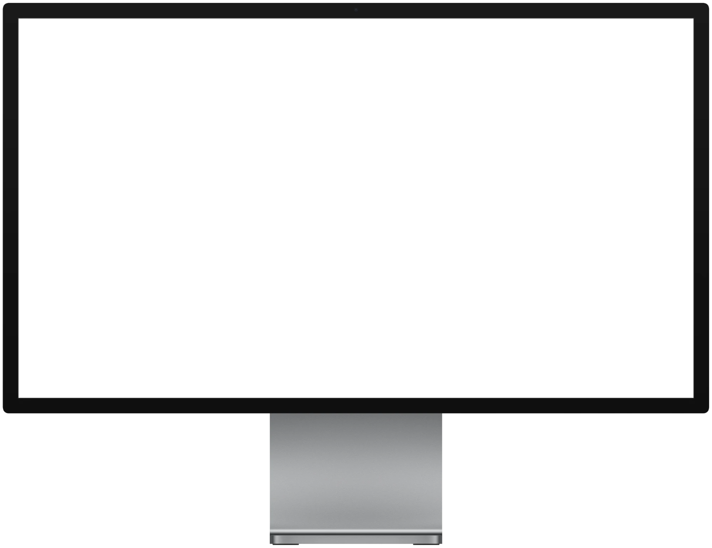
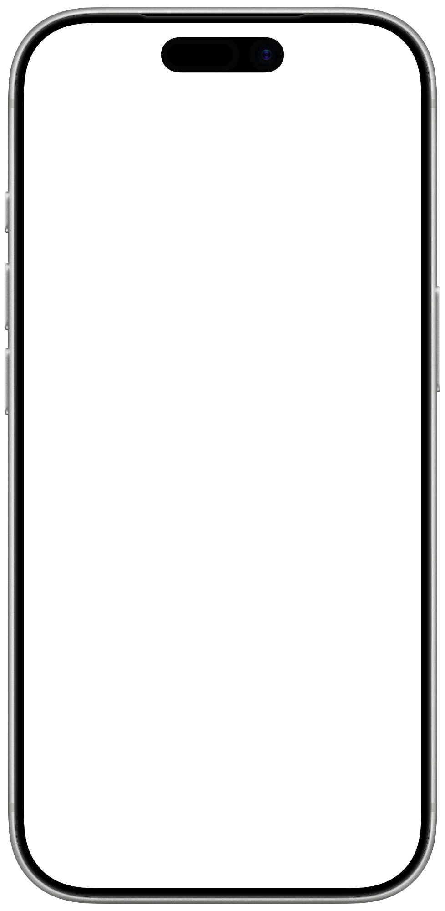

RG BATTLE
프로젝트 소개 · 2026
버튼으로 겨루는,축제의 리듬게임
학교 축제용 2인 대전 리듬게임


RG 운영자● 연결됨
1P412,300
2P398,150
▶ 시작
중단
메인으로

02 플레이 · Battle
치는 순간이눈에 바로 보입니다

- 드럼 패드 눌린 버튼이 번쩍임
- 콤보 올라갈 때마다 튀고 50콤보마다 효과
- 피버 게이지 정확할수록 차오름
- 점수 막대 두 사람의 차이를 한가운데에
시연 화면은 자동 플레이로 캡처한 이미지입니다.
02 플레이 · Scoring
공정하게 겨룹니다

- 판정 PERFECT ±40ms · GOOD ±90ms
- 점수 최대 1,000,000점 (정확도 90만 + 콤보 10만)
- 승패 점수 → 같으면 정확도 → 같으면 무승부
- 동시에 같은 곡, 같은 채보, 같은 판정 기준
판정 범위는 초기값이며 실제 컨트롤러 시험으로 조정합니다.
Thank you
풀고, 겨루고,다음 사람에게
감사합니다. 질문을 받겠습니다.